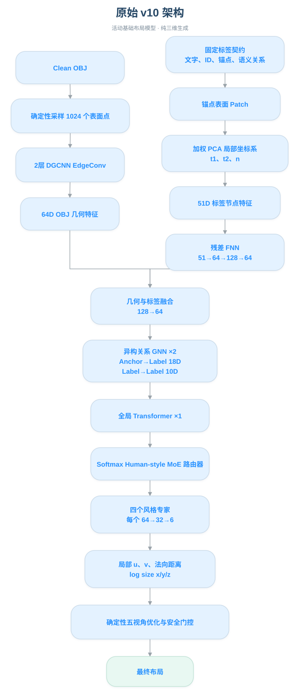
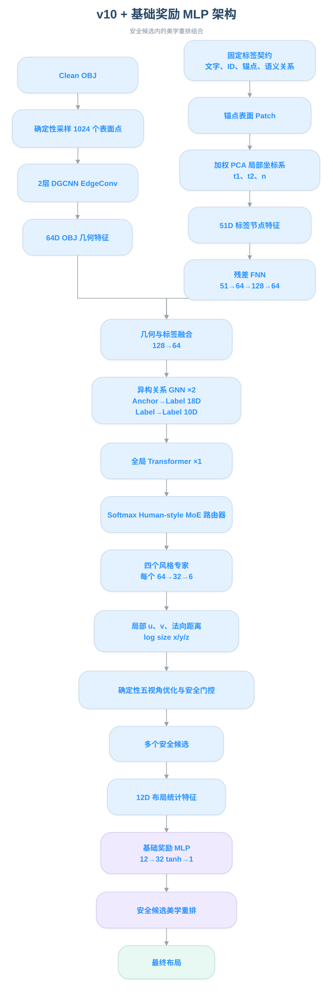
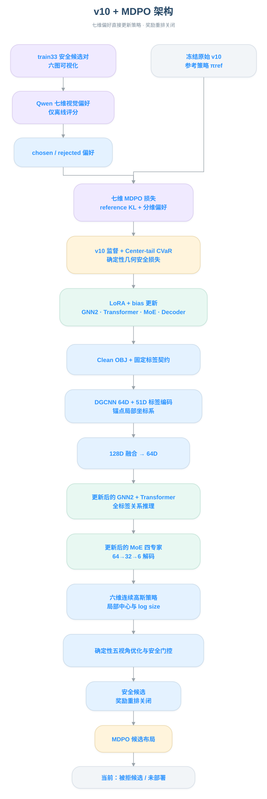
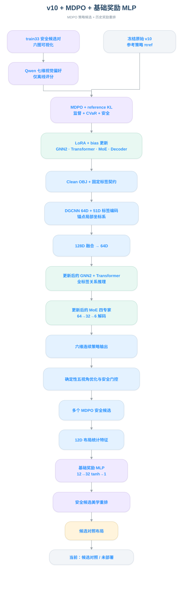
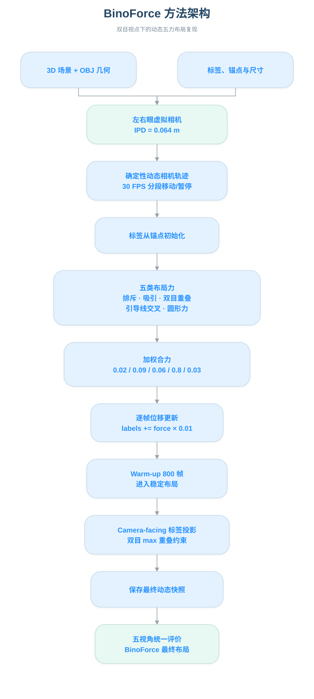
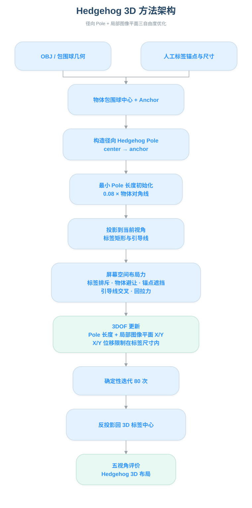
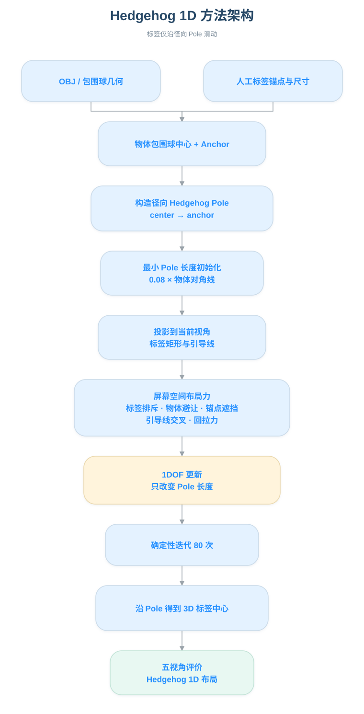
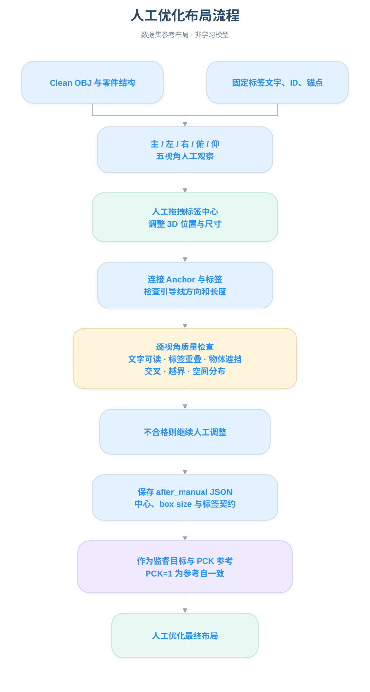

原始 v10 架构
活动基础布局模型 · 纯三维生成
统一依据当前项目实现与复现实验生成；点击图片可打开完整 SVG。

活动基础布局模型 · 纯三维生成

安全候选内的美学重排组合

七维偏好直接更新策略 · 奖励重排关闭

MDPO 策略候选 + 历史奖励重排

双目视点下的动态五力布局复现

径向 Pole + 局部图像平面三自由度优化

标签仅沿径向 Pole 滑动

数据集参考布局 · 非学习模型